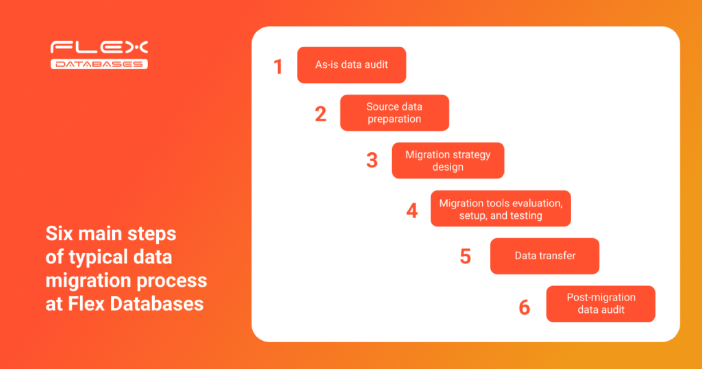

Recently, we discussed questions that might arise when changing your eClinical software provider. Today, we want to take a closer look at one of the most asked questions:
“ – How can I migrate data from a legacy CTMS or eTMF? “
Data migration is a delicate process with many moving parts. Without a well-established process, the CTMS go-live could be postponed, with your new provider wasting resources on getting your historical data into their database in the meantime.
Let’s talk about how Flex Databases manages the data migration process and share best practices based on our experience.
Below is the typical data migration flow implemented at Flex Databases:
Let’s look at each step in more detail:
Step 1: As-is data audit
Historical data is carefully scoped and scrutinized on its structure, links, and accuracy. We always involve all stakeholders and ask them to verify their own data before the audit.
Before the audit begins, the following questions must be answered:
- How can data be extracted from a legacy system?
- Will this data be raw extracts and, if so, in which formats?
- Does the system have an API?
Step 2: Source data preparation
Once we determine the scope of work and initial data structure, we identify the following field-level obstacles:
- Potentially missing links, blanks, and extra spaces
- Whether to convert data fields before uploading them (e.g. dates, which can vary across databases)
- Validation and business rules in the legacy system that should be reused in the new database
Sometimes, a lack of data governance rules in the legacy system results in frustration during the data migration.
Here is an example from our practice:
There are cases where a single data point would be the same across databases, but each entry would be inconsistent in terms of spelling. For example, in three databases a data point was marked as “screen-failed”, “screen failed”, and “screening failure”. Thanks to our analytical tools, we managed to triage and consolidate all siloed values, creating well-organized data.
Another point of frustration is poor data normalization. Here’s an example:
A key entity (e.g. ‘investigators’) would sometimes be loosely connected to other objects (e.g. ‘sites’ or ‘institutions’). This resulted in discrepancies across objects (e.g. the same person would attributed to multiple sites as a site team member but have different names: John Doe vs. Jonathan Doe)
Identifying missing links in a legacy system at the early stage is a difficult task, but not impossible. With the help of automated data, the target system does not inherit weaknesses from the source system.
Step 3: Migration strategy
Using the results of data audit and preparation, and taking into account business expectations, we define a strategy for data migration and acceptance criteria.
We offer two options:
| Geographic databases | Iterative transfer |
|---|---|
| The full data transfer is completed within the pre-agreed time frame while systems are in downtime. | Continuous migration while both the source and target systems are running. |
- Given that most complexities are identified during the preparation stage, we can mitigate risks and avoid unexpected issues accordingly while keeping the project within the agreed budget and schedule.
- We put a lot of focus on crafting the risk management policy, an essential part of any migration plan that aims to outline the issues that could happen at any stage and how they can affect expectations.
- Once selected, the data migration plan, including timelines, tasks, and responsible managers, is communicated to all stakeholders for transparency.
Step 4: Set up and testing
After the migration plan and strategy are set, we identify and allocate the tools and resources needed to implement each step.
Core tools that we utilize belong to the following classes:
- ETL (Extract, Transform, Load)
- SQL migration services
- Migration workbench
The choice of tool depends on the complexity of the migration project and processes involved. Although the old and new systems belong to the same family (CTMS), the same feature/object can vary across different CTMS.
This concerns not only the data transfer but the data transformation and remodeling process. As such, the migration tool should also support these additional activities.
As a rule of thumb, each phase of the migration plan should be covered by tests, both automated and manual.
Test scripting usually involves the following aspects:
- The test objective itself
- The time frame of the test
- The scope of data involved (single record, data subset, full dataset, etc.)
- The mock data or live data used
- Parameters for evaluating and communicating the test results
Step 5: Data transfer
Once the internal validation and testing is completed and all discrepancies resolved, we execute the live data transfer.
We ensure that all stakeholders are informed in advanced so that can plan their schedules and activities accordingly.
Step 6: Post-migration data audit
We continue to test even after the data transfer is done. The final data audit aims to ensure the completeness and accuracy of the migration and, eventually, showcase the success of the overall project.
Our approach is usually to build a final reconciliation report showing the total number of objects transferred; actual number of records transferred versus those initially targeted; and discovered inconsistencies and how they have been processed.